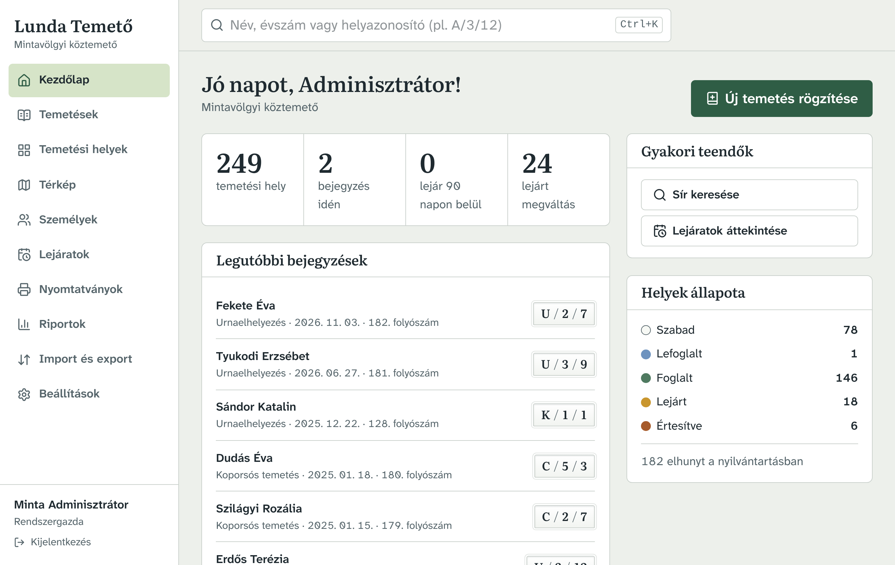
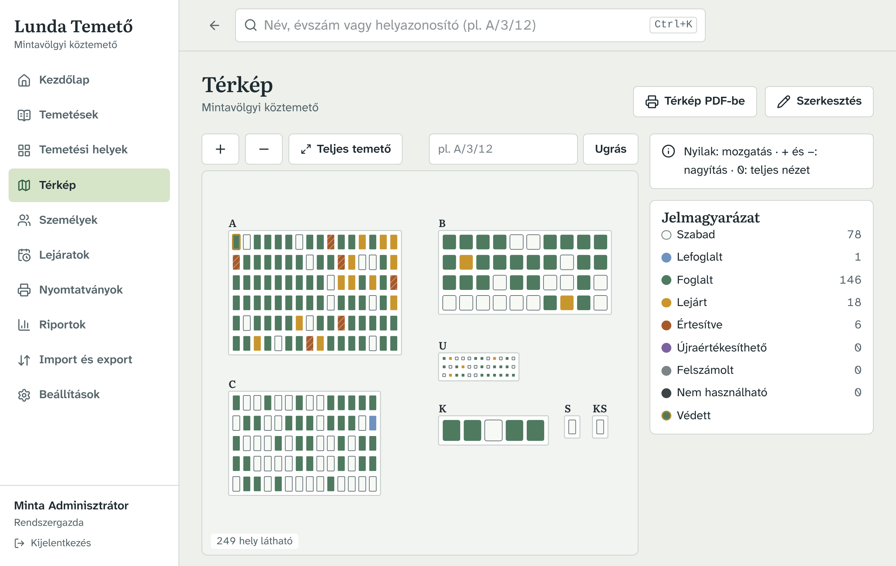
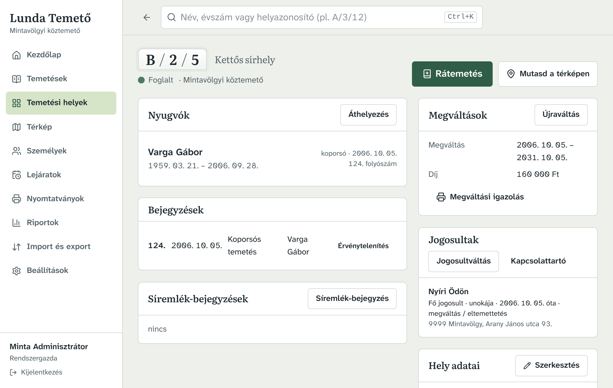

A temető nyilvántartása, papír nélkül
Nyilvántartó könyv és sírbolt könyv folyószámmal, megváltások és lejáratok, temetőtérkép, hiteles nyomtatás. Az adatok a saját gépén maradnak, titkosítva, internet nélkül is.
Másik rendszerre
Az első kiadás telepítői éppen készülnek. Néhány perc múlva frissítse az oldalt, vagy nézze meg a kiadások listáját.
Windows 10 és 11 (Intel/AMD vagy ARM) · macOS 12 vagy újabb (Apple Silicon és Intel)

Mit tud
- Nyilvántartó könyv és sírbolt könyv
- Minden temetés automatikus, kihagyás nélküli folyószámot kap. Bejegyzést törölni nem lehet, csak indoklással érvényteleníteni. Hiteles nyomtatás oldalszámozással és záradékkal.
- Megváltás és lejárat
- A lejáratot és a rátemetéskor szükséges újraváltást a program kiszámolja. Lejáratfigyelő, tömeges értesítő levél, QR-kódos sírcímke és hirdetőtábla-lista.
- Rátemetés ellenőrzése
- Férőhely, nyugvási idő, temetési tilalom: ha a temetés nem engedélyezhető, a program megállít és megmondja, miért.
- Temetőtérkép
- Színkódolt helyállapotok, kattintásra az adatlap, kinyomtatható helyszínrajz A4-től A0-ig. Ötvenezer hellyel is gördülékeny.
- Átállás a régi nyilvántartásról
- Excel- vagy CSV-import próbafuttatással, a régi folyószámok megtartásával, és gyors bevitel a papírkönyvből, végig billentyűzetről.
- Biztonság
- Titkosított adatbázis, napi titkosított mentés ellenőrzőösszeggel, változásnapló, felhasználói szerepkörök.


Telepítés
-
Windows
Futtassa a letöltött
…-setup.exefájlt. Ha megjelenik a „A Windows megvédte a számítógépet” ablak, kattintson a „További információ”, majd a „Futtatás mindenképp” gombra. -
macOS
Nyissa meg a
.dmgfájlt, és húzza a Lunda Temetőt a Programok mappába. Első indításkor kattintson rá a jobb gombbal, és válassza a „Megnyitás” lehetőséget. Ha a rendszer nem engedi, a Rendszerbeállítások › Adatvédelem és biztonság oldalon válassza a „Megnyitás mindenképp” gombot. -
Első indítás
Hozza létre a rendszergazda fiókot, adja meg a mentés helyét, és nyomtassa ki a helyreállító kulcsot. Kipróbáláshoz betölthet egy kitalált mintatemetőt.
A figyelmeztetések a kódaláíró tanúsítvány beszerzéséig jelennek meg. A program az adatokat kizárólag a saját gépén tárolja.